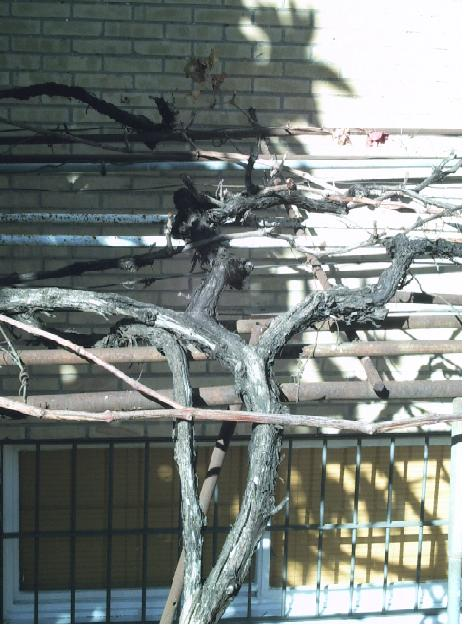

|
Vitis vinifera L.,Sp. Pl.
202 (1753)
|
Vitáceas |
| Vid, parra |
Trepadora leñosa |
|
Arbusto caducifolio,
trepador mediante zarcillos adherentes, opuestos a las hojas
(pámpanos); puede alcanzar 30 metros; según el tipo de
poda puede crecer como arbusto de c. 1 m (cepa) o como liana (parra);
tronco retorcido y
tortuoso, con corteza gruesa y áspera; las ramas
jóvenes se llaman sarmientos.
Hojas alternas, con pecíolo de 5-7 cm,
con
estípulas caducas; lámina c.
12 x 11 cm, palmatisecta, con 5-7
lóbulos; lóbulos dentados.
Inflorescencias en forma de
panículas cimosas, axilares, colgantes.
Flores hermafroditas, pequeñas,
amarillo-verdosas; cáliz con 5 dientes; corola con 5
pétalos soldados entre sí por la punta en forma de cofia;
androceo con 5 estambres; gineceo con ovario súpero, con 2
cavidades, rodeado en la base por un disco glandular pentalobulado.
Fruto de tipo baya (uva), de 1-2 cm, jugoso, de
color
variable, desde
un amarillo dorado hasta negro, con 1-4 semillas ovoides. (1)
|
 Foto: Helena García Moreno, 2008 |
|
Observaciones:
Familia que presenta 14 géneros y 700 especies, repartidas principalmente por las regiones tropicales y subtropicales. Aproximadamente la mitad corresponden al género Cissus. Su nombre deriva de la raiz indogermánica ueit-: rama flexible, sarmiento, que a su vez procede de la raiz uei-: retorcer, enroscarse, enredarse. En estado silvestre (var. sylvestris, con flores unisexuales) es frecuente en sotos y bosques de rivera. |
|
| Área
de origen.- Europa y W
de Asia. Numerosas variedades
cultivadas en las regiones templadas de todo el Globo para la
producción de uva de vino y de mesa. |
|
|
Uso en el
campus: Siguiendo la tradición andaluza, se plantó para que diera sombra a la casa del antiguo conserje de la Facultad |
Localización: Parte Central del Campus: Facultad de Matemáticas
|
| (1) López González, G., Guía de los árboles y arbustos de la Península Ibérica y Baleares. | |
| Helena García Moreno & Carlos Romero Zarco, 2008 | |